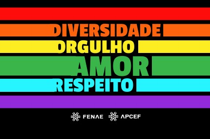

Juntos por respeito, igualdade e amor!!
LGBTfobia é a discriminação ou preconceito contra pessoas lésbicas, gays, bissexuais, trans, queer e outras identidades de gênero e orientações sexuais. Pode se manifestar de diversas formas, desde ofensas verbais até agressões físicas, exclusão social ou negação de direitos.
Combater a LGBTfobia é essencial para garantir o direito de todos viverem com dignidade, respeito e liberdade. A informação, o diálogo e a empatia são ferramentas poderosas na luta contra o preconceito.
